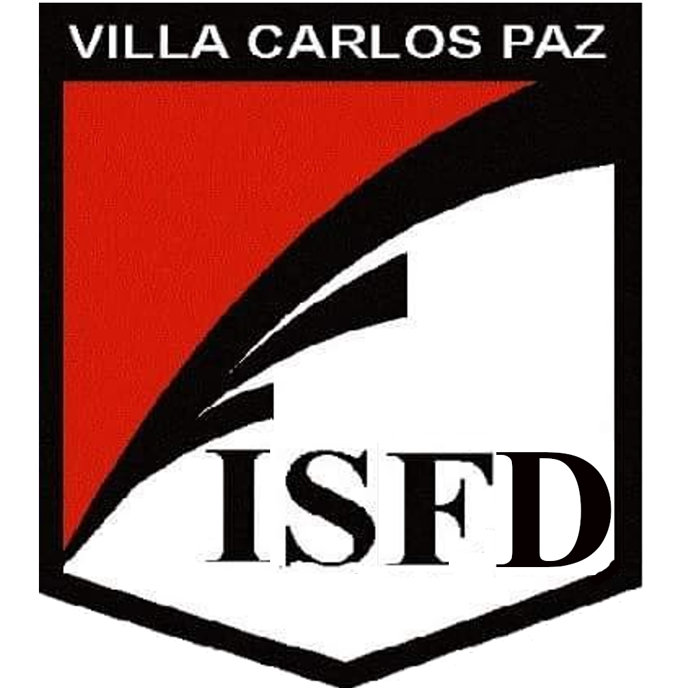

Educación Académica
-  Bachillerato: Bachiller en el Instituto de Enseñanza Secundaria y Superior (IESS). Orientado en Ciencias Naturales.
- Universitario: Actualmente estudiando la carrera de Ingeniería Electrónica en el Instituto Universitario Aeronáutico, Centro Regional Universitario de Córdoba (CRUC IUA).
- Cursos: Finalizada 1er etapa de Argentina Progama. Actualmente cursando la 2da etapa de Argentina Programa con el fin de obtener el título de Dessarrollador web Full stack junior.
- Otros: Se aprobó exámen de nivel de inglés técnico en CRUC IUA, se cursó la materia "Computación" en Bachiller (IESS). Curso "MATLAB Onramp" de Mathworks finalizado.